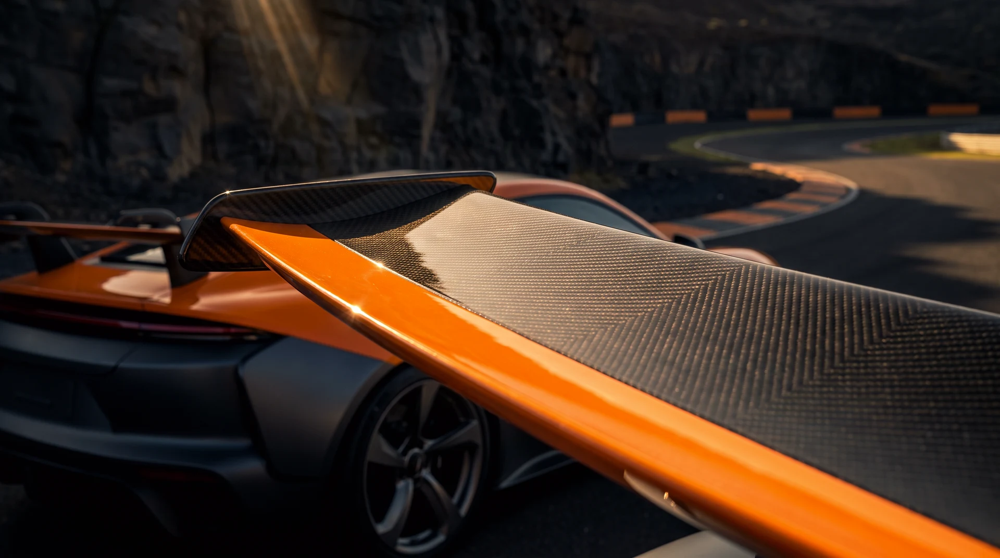
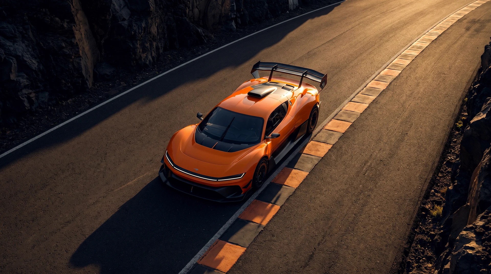
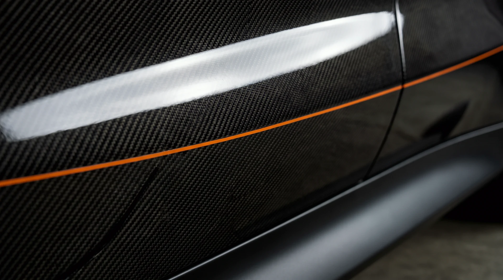

SC-02 · THE RING · BASALT CIRCUIT · —
SERRA
A wing that happens to carry a car. The SERRA exists for the 7.4 kilometres of the Ring and refuses to acknowledge public roads — above the crossover speed it could, in principle, drive on a ceiling.
01 · THE ARGUMENT
OPEN COCKPIT · NA V10 · SWAN-NECK WING
Lift is a choice.
We chose down.
Most cars spend their lives arguing with the air. The SERRA recruited it. Every surface from the splitter to the swan-neck is a negotiation for grip, and the result is printed in the ledger: a lift area of minus three point nine square metres, working against the mass of a small car. The Ring's basalt does the rest.
The number worth staring at is the crossover — the speed where downforce equals weight, computed from the declared lift area and nothing else. Past that figure the SERRA is no longer resting on the circuit. The circuit is holding it down.
02 · UNDER LIGHT
DRAG THE GLARE ACROSS THE PAINT

LIGHT RIG · MANUAL
03 · ITS SECTOR
THE RING · 7.4 KM · 14 CORNERS · SURVEYED DAILY

